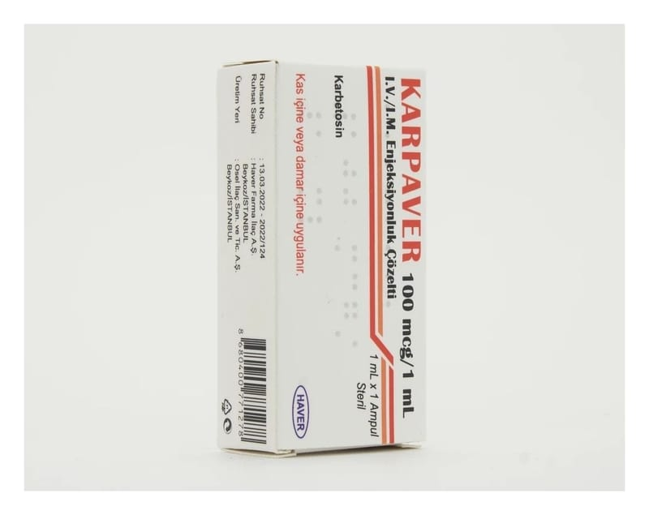

Karpaver 100 mcg/1 ml I.V./I.M. Enjeksiyonluk Çözelti, 1 Adet

Ne için kullanılır
KT · Bölüm 1KARPAVER, 1 mL’lik 1 adet veya 5 adet ampul içeren ambalajlarda damar veya kas içine enjeksiyon için hazır olarak sunulmaktadır. Her bir ampulde, 100 mikrogram etkin madde karbetosin içeren çözelti bulunmaktadır. Karbetosin, doğum sırasında rahmin kasılması için vücut tarafından doğal olarak üretilen oksitosin adlı maddeye benzer bir moleküldür.
KARPAVER yeni doğum yapmış olan kadınların tedavisinde kullanılır.
Doğum sonrası, bazı kadınlarda rahim yeterince hızlı kasılmaz (büzülmez). Bu da rahmin normalden daha fazla kanaması ihtimalini artırır.
KARPAVER rahmin kasılmasını sağlayarak kanama riskini azaltır.